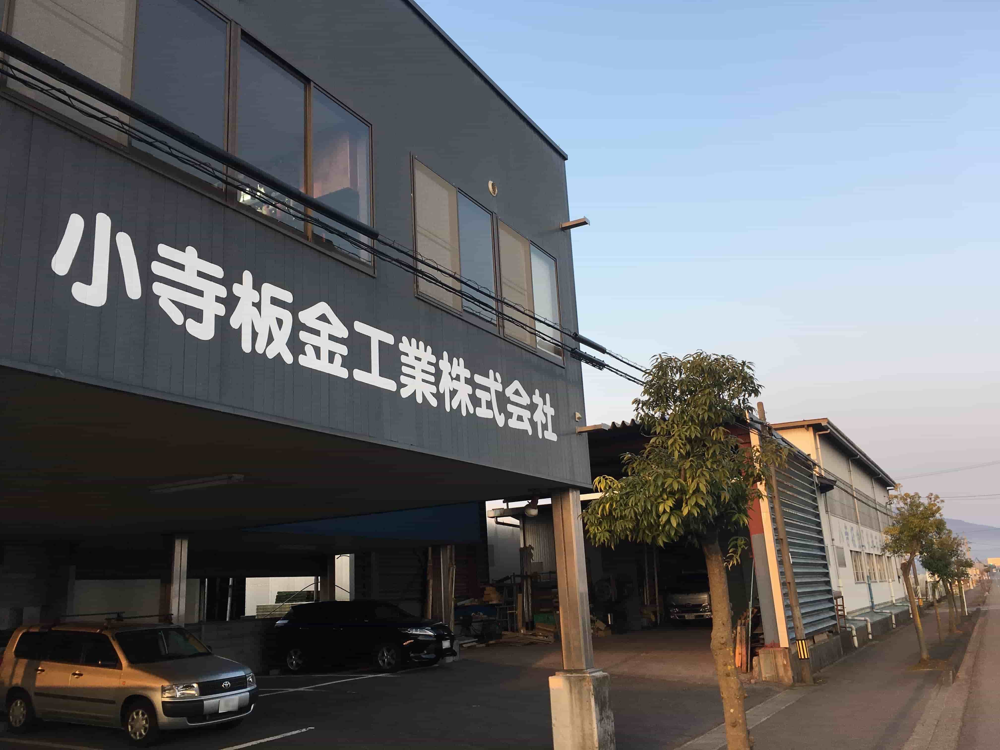
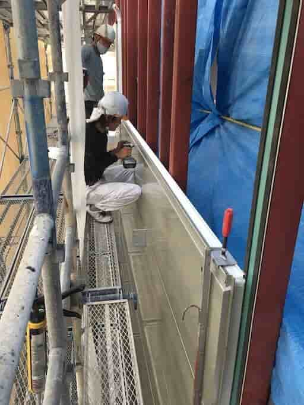
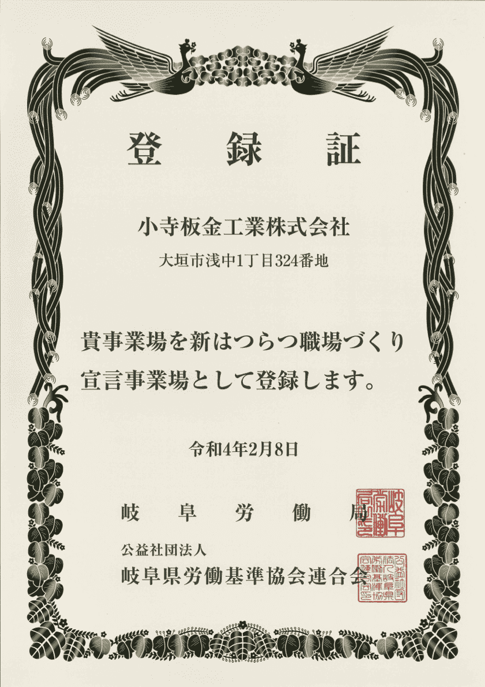

信頼ある技術力で施工し続けて82年
屋根や外壁・樋の施工には、建物への雨水の侵入を防ぎ、風による被害を防ぐ為の技術力が求められます。
難しい仕事ととらわれがちですが、だからこそ、建築板金工と呼ばれている職人達は、誇りをもって仕事に取り組んでいます。

一級建築板金技能士が工事担当いたします
当社におきましては、国家資格である1級建築板金技能士資格（内外装板金作業）を3名が取得しております。（令和3年度3月末時点）
建築板金技能士資格とは、厚生労働省が所管する技能検定（建築板金職種）に合格した者に与えられる国家資格です。
このことについてもっと詳しく
新はつらつ職場づくり宣言事業場です
新はつらつ職場づくり宣言とは、快適で仕事のしやすい職場づくりを目指すことを企業と従業員が共同で宣言するものです。
岐阜労働局によって定められた重点項目の内容に従い、企業ごとに独自の宣言を行います。
このことについてもっと詳しく